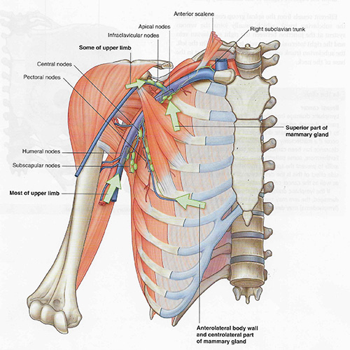

Lab 1 - Module 2: Axilla - Page 8 of 8
Axillary Lymph Nodes
|  |
| Tap on image to enlarge |
1. The pectoral group of axillary lymph nodes – receive lymph mainly from the anterior thoracic wall including the breast. Efferent vessels pass from these to the central and apical groups of nodes.
2. Lateral group of axillary lymph nodes – receive lymph from most of the upper limb.
3. Subscapular group of axillary lymph nodes – receive lymph from the posterior aspect of the thoracic wall and scapular region. Efferent vessels pass from these to the central group of nodes.
4. Central group of axillary lymph nodes – receive lymph from the other groups of axillary nodes (pectoral, lateral, subscapular). Efferent vessels from this group pass to the apical group of nodes.
5. Apical group of axillary lymph nodes – situated in the apex of the axilla; receive lymph from all other axillary lymph nodes. Efferent vessels from this group unite to form the subclavian lymphatic trunk which joins the jugular and bronchmediastinal trunks to form the right lymphatic duct. On the left side, the subclavian lymphatic trunk joins the thoracic duct.